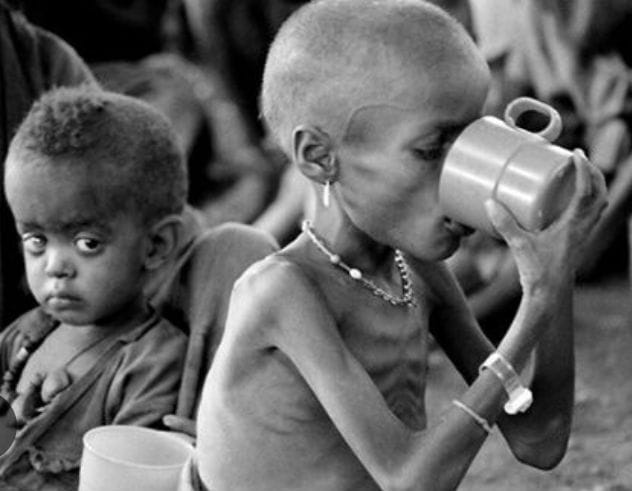
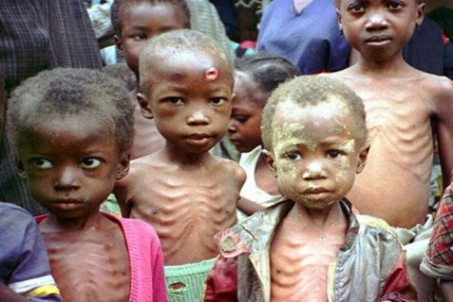
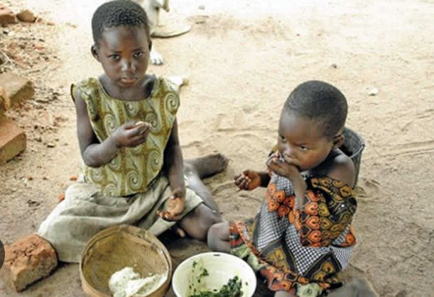

A desnutrição é um estado patológico causado pela falta de ingestão ou de absorção de nutrientes, ou seja, é má nutrição. O problema pode ser observado com base na aparência, na altura e no peso da pessoa. Em alguns casos, os ossos ficam salientes, a pele seca e sem elasticidade, e os cabelos caem com facilidade. Entretanto, em outros casos, a desnutrição pode ser leve e sem qualquer registro de sintomas, resultado de uma dieta inadequada.
  As causas da desnutrição dependem do tipo. Entre as causas primárias, está principalmente a dieta inadequada, isto é, a alimentação insuficiente em quantidade ou qualidade de calorias e nutrientes.
Já dentre as causas secundárias, há a ingestão insuficiente de alimentos por fatores externos, que podem demandar um gasto energético maior do corpo ou impedir a pessoa de se alimentar e absorver os nutrientes corretamente. Alguns motivos que podem levar a esse quadro são:
O desmame precoce também está entre as causas da desnutrição, uma vez que o leite materno contém nutrientes essenciais que dificilmente são encontrados em quantidades adequadas na alimentação sólida, e que são apenas parcialmente supridos com fórmulas infantis.
Os sintomas da desnutrição em adultos podem incluir:
Os sintomas da desnutrição infantil podem incluir:
A educação alimentar tem um papel fundamental durante o tratamento e é essencial em todas as etapas da vida. Como a desnutrição é bastante comum na infância, é fundamental que as pessoas que fazem parte do núcleo de educação e formação das crianças (família, cuidadores e professores) tenham acesso a informações sobre o correto aproveitamento dos alimentos e sobre alimentação saudável.
Clica aqui para se informar sobre como solucionar